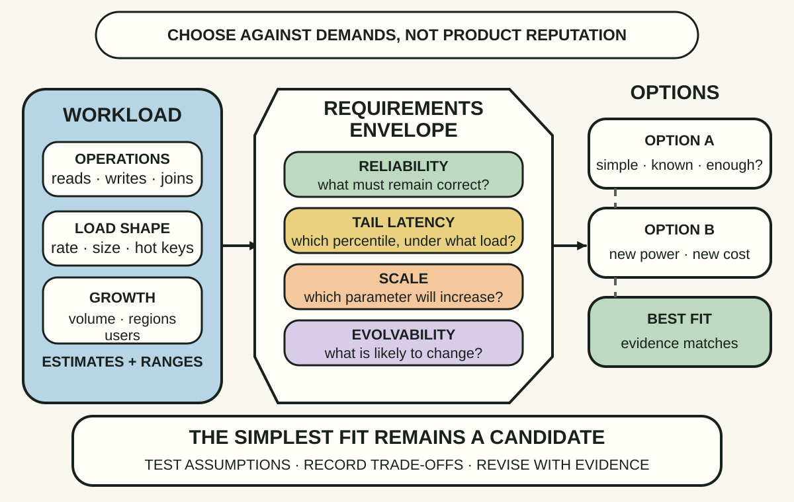
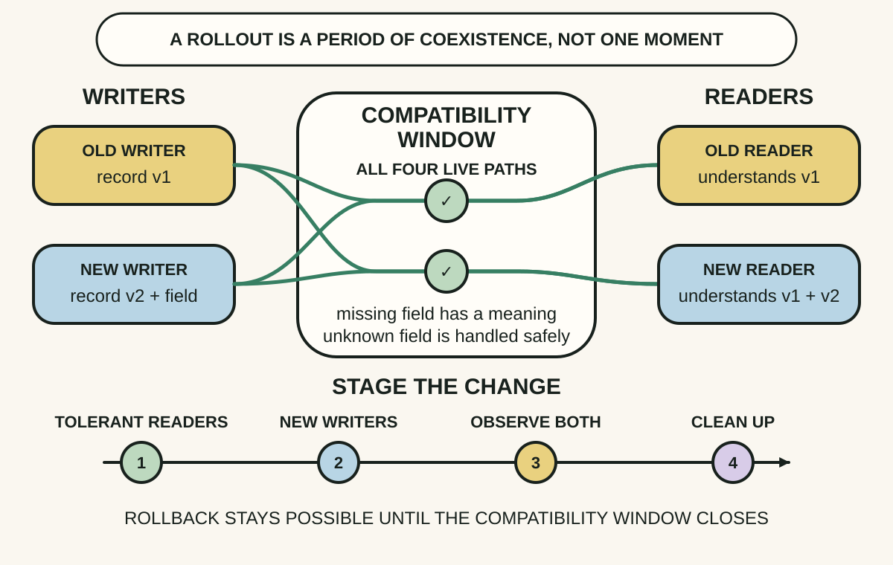
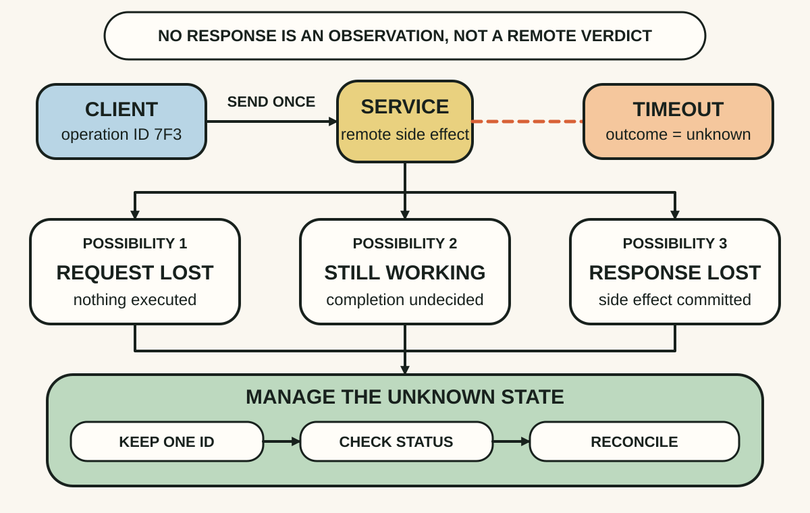

Daily lesson ·
Designing Data-Intensive Applications
Choose data systems from explicit workloads and guarantees, evolve formats for mixed-version reality, and treat a timeout as uncertainty rather than proof of failure.
Idea 1
Define the workload before choosing the system #
The idea
Kleppmann and Riccomini frame data-system architecture as a set of trade-offs among functional needs and qualities such as reliability, scalability, performance, maintainability and evolvability. A technology is not simply scalable or fast in the abstract; its behaviour depends on the operations, data volume, access pattern, failure tolerance and change rate it must support.
They therefore begin with workload and nonfunctional requirements. Load parameters such as requests per second, read-to-write mix, item size, data growth and hot-key concentration make a design claim testable, while latency percentiles and failure semantics say what acceptable service actually means.

Why it matters
Teams can spend days debating database brands while hiding the assumptions that would decide the question. Explicit parameters turn preference into a falsifiable design and reveal when a simpler single-node or existing system is sufficient.
Apply it today
Choose one proposed data or integration component. Write its most important read or write operation and the peak load shape it must handle.
Add one tail-latency target, one correctness guarantee and one expected change over the next year. Compare options only against that small envelope.
Caveat or failure mode
Early numbers are estimates, and requirements can conflict or change. Do not manufacture false precision or demand every desirable property at once; record uncertainty, test the sensitive assumptions and revise the envelope with production evidence.
Idea 2
Design schema change for mixed-version reality #
The idea
The authors argue that applications and their stored data inevitably evolve, while deployment is rarely instantaneous. Old records remain after new code ships, and rolling deployments leave old and new processes active together. A format change must therefore be judged by how different versions read one another's data, not only by whether the latest code works with itself.
Backward compatibility lets newer code read data written by older code; forward compatibility lets older code read data written by newer code. Additive fields, explicit defaults, tolerant readers and staged rollouts can preserve both directions long enough for a safe transition.

Why it matters
A change can pass unit tests and still fail when an old worker reads a new message, a new release encounters an old row, or a rollback restores code that no longer understands current data. Compatibility makes those temporal dependencies explicit.
Apply it today
For one upcoming field or event change, list every writer, reader and stored copy that may still use the old format during rollout or rollback.
Choose an order: first make readers tolerate both forms, then introduce the new write, observe coexistence, migrate old data if needed and remove compatibility only after evidence shows it is unused.
Caveat or failure mode
Additive evolution is not free forever. Some semantic changes cannot be made safe with optional fields, and permanent tolerance creates ambiguity and maintenance cost. Define an observation period and a deliberate cleanup or translation boundary.
Idea 3
A timeout leaves the outcome unknown #
The idea
Kleppmann and Riccomini emphasise that distributed systems fail partially. A request can be lost, the server can be slow, the operation can complete while its response is lost, or the caller can pause. From a timeout alone, the caller cannot distinguish these cases.
A timeout is therefore a limit on knowledge, not evidence that the operation was rolled back. Blindly retrying a non-idempotent action can duplicate a payment, order or message. Stable operation identifiers, idempotent handling, status checks and reconciliation turn uncertainty into a state the system can manage.

Why it matters
Many severe duplicate-action bugs begin with the reasonable but false sentence, 'It timed out, so it failed.' Designing the unknown state explicitly protects users and makes recovery observable instead of depending on luck.
Apply it today
Choose one remote action with a side effect, such as creating an order, sending a notification or updating a case. Ask what a timeout proves about its outcome.
Write the stable operation ID, safe retry rule, status or reconciliation check and user-visible state for an unresolved result.
Caveat or failure mode
Idempotency is scoped, not magical. Keys can expire, downstream side effects may not share the guarantee, and indefinite retries can amplify overload. Bound retry timing, document key scope and retain a reconciliation path for ambiguous operations.
Knowledge check · 6 questions
Learning check
Answer all 6, then check your answers. Your first result stays in this browser, and each explanation appears after you check. A 3-question review can appear on the homepage from tomorrow.
6 questions not yet answered.
Today's experiment · 10 minutes
Write a one-page data-system assumption card
- Name one important operation and write its peak load shape plus one tail-latency or reliability target.
- Describe one likely data-format change and list the old and new readers and writers that would coexist.
- Choose one remote side effect and write what a timeout leaves unknown.
- Add a stable operation ID, verification step or reconciliation owner, then circle the assumption you need to test first.
Observable result: You finish with one inspectable card connecting workload, evolution and partial-failure recovery to a real system decision.
Retrieval practice
Spaced recall
- From A Philosophy of Software Design: which design information should a deep module hide, and which data contract must remain visible to its consumers?
- From Accelerate: which flow and instability measures would reveal a retry policy that improves speed by creating duplicate work?
Verification
Source notes
These links support the attributed claims and edition details; applications and extensions are labelled in the lesson.
- O'Reilly: Designing Data-Intensive Applications, second edition
- Martin Kleppmann: official Designing Data-Intensive Applications site
- O'Reilly preview: Trade-Offs in Data Systems Architecture
- O'Reilly preview: Defining Nonfunctional Requirements
- O'Reilly preview: Encoding and Evolution
- O'Reilly preview: The Trouble with Distributed Systems
One-sentence takeaway